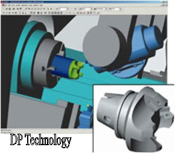

|
Bülent
Kalaycýoðlu
Nisan 2005
Altar Ltd.
Þti.
2
½ Axis Milling: CNC FrezeTezgahýnda ayný anda XY, XZ veya
YZ eksenleri
hareket eder. Üçüncü eksen hareketi ardýndan gelir . Örnek
Delik delme, klavuz çekme, sabit derinliklerde cep boþaltma.
|
|
|
4th/5th
axis milling, position only
|
2
Axis Turning (Lathe): 2 Eksen standart torna. Burada XZ
eksenlerinde hareket vardýr. Tornada X ekseni çap, Z ekseni
ise parçanýn boyuna olan hareketi temsil eder.
3
Axis Milling: 2 ½ eksen harekete ilave olarak ayný anda
XYZ eksenleri hareket edebilir. Örnek vida takýmý ile helisel
hareket ile erkek veya diþi vida açma.
4
Axis Turning (Lathe): 4 Eksen torna olarak adlandýran
bu tür tezgahlarda, torna aynasýna baðlanan parçayý ayný anda
iki takým birden keser. Her bir takým karþýlýklý duran ayrý
bir tarete baðlýdýr ve taretler senkronize olarak çalýþýr.
4th/5th
axis milling, position only: 4. ve 5. eksenlerde tezgah
tablasýnýn veya iþ milinin döneme hareketidir. X ekseni etrafýnda
dönme A, Y ekseni Etrafýnda dönme B, Z ekseni etrafýnda dönme
C olarak adlandýrýlýr. Bu tür tezgahlarda tezgah istenilen
açý konumuna geldikten sonra XYZ eksenlerinde kesme iþlemi
baþlar.
5
axis milling, full contouring: Tezgahýn ayný anda 5 ekseninin
birden hareket edebilme yeteneðidir. Bu hareketlerin tamamý
iþ milinden olabileceði gibi, iþ mili ve tabladan beraberce
olabilir.
|
|
|
5
axis milling, full contouring
|
Adaptive
Feedrate: Ýlerleme deðerinin belirli iþleme konumlarýnda
otomatik olarak azalmasý veya artmasý
AFR
(Automatic Feature Recognition): CAD sistemlerinde modellenip
CAM sistemlerinde açýlan katý modeller üzerindeki delik, cep,
çýkýntý gibi unsurlarýn algýlanmasý ve bu unsurlar üzerinde
otomatik takým yolu oluþturulmasý
B
axis Machining (Lathe): C&Y eksen özellikli tornada
canlý freze çakýsýnýn baðlý bulunduðu iþ milinin ayný zamanda
açýsal olarak hareket edebilmesidir. Belirtilen bu harekete
ilave olarak bu tür tezgahlarda parçalarý tek baðlamada iþleyebilmek
için "Sub-Spindle" olarak adlandýrýlan ve Z ekseninde
ileri geri hareket edebilen bir karþý ayna bulunur.
|

|
|
B
axis Machining (Lathe)
|
Ballnose:
Küresel uçlu parmak freze
Block
Skip/Slash Delete: CNC program içinde bazý satýrlarý tezgah
dikkate almadan çalýþabilmesi için satýr baþlarýna "/"
iþareti koyulur
Boring:
Hassas Delik iþleme
CAM:
Computer Aided Manufacturing, Bilgisayar Destekli Ýmalat
C&Y
Axis Turning (Lathe): Standart 2 eksen torna özelliklerine
ilave olarak iþ milinin belirli açýlara kendini konumlayabilmesi
C eksenidir. Y ekseni ise taret üzerine takýlabilen canlý
freze çakýsý (freze çakýsý dönüyor) ile silindirik parça üzerinde
frezeleme iþlemidir.
Center
Drill: Punta Matkabý
Chipbreak
Drilling: Matkap ile delik delerken, matkab belirli derinliklerde
durdurularak talaþ kýrýlmasý saðlanýr
Chuck:
Torna Aynasý
Climb
Milling: Eþ yönlü frezeleme . Kesici takým saat yönünde
dönerken kesme sola doðru yapýlýr.
CMM
(Coordinat Measuring Machine): Parça ölçümlerinde ve tersine
mühendislik iþlemlerinde kullanýlan 3 boyutlu kordinat ölçüm
cihazý.
CNC
(Computer Numerical Control): Bilgisayarlý sayýsal kontrol
Constant
Surface Speed: Alýn Tornalama iþleminde deðiþken devir
ile iþleme yöntemi. Sabit kesme hýzýný saðlamak için tornalam
esnasýnda parçanýn büyük çapýndan küçük çapýna doðru devir
sayýsý artýrýlarak tornalama yapýlýr.
Conventional
Milling: Zýt yönlü frezeleme. Kesici takým saat yönünde
dönerken kesme saða doðru yapýlýr.
Coolant:
Soðutma Suyu
Counterbore
(C'BORE): Düz Havþa
Countersink
(C'SINK): Konik Havþa
Cusp/Scallop
Height: Pürüz yüksekliði
Cycle:
CNC tezgaha ait çevrimlere verilen genel ad. Örnek Delik Delme
Çevrimi
Datum
Shift: Sýfýr noktasý kaydýrma
Depth
of cut / Cut Increment: Z ekseninde kesme paso derinliði
Drilling:
Delik Delme
Dwell:
CNC tezgahlarda belirli çevrimlerde verilen bekleme Süresi
Endmill:
Parmak Freze
Engraving:
CNC tezgahlarda kalýplar üzerine parça no, firma adý vs. gibi
yazý yazma iþlemi
Feed:
Ýlerleme dev/dak (freze) veya mm/dev (torna)
Finishing:
Ýnce talaþ ile iþleme, son ölçüye getirme pasosu
Flowline
Machining: CAM sisteminde oluþturulan takým yolunun parçanýn
þekline göre kendini uyarlamasý
Gouge
Checking: CAM sisteminde oluþan takým yolunun parçada
istenmeyen yerlere girmesinin engellenmesi. Sanayide kullanýlan
adý "Dalma Kontrolü"
Grooving:
Silindir etrafýna kanal açma (ör:segman kanalý)
Helical
Milling: Helisel hareketli takým yolu
High
Speed Machining /HSM: Yüksek devirli tezgahlarda, düþük
kesme pasosunda yüksek hýzda kesme tekniði. Yüksek ilerlemelerde
kesme iþlemi esnasýnda CAM sisteminde oluþturulan takým yollarýnýn
yüksek kesikin dönüþ hareketleri içermemesi gerekir.
Knowledge
Base machining /Strategy Mananger: CAM yazýlýmýna, sýklýkla
kullanýlabilecek operasyonlar öðretilir, daha sonra bu operasyonlara
ihtiyaç duyulduðunda birkaç týklama ile takým yollarý kýsa
sürede oluþturulur
Materilas
Library: CAM yazýlýmýnda malzeme türüne göre kesme parametrelerini
(devir ve ilerleme) alabileceðiniz veri tabaný.
Milling:
Frezeleme
Mold
and Die: Plastik Enjeksiyon, Dövme, Döküm Kalýpçýlýðý
Nesting:
Þac-plaka kesimlerinde kesilecek olan parça geometrisinin
plaka üzerine en az fire verecek þekilde yerleþtirilmesi.
NURBS
Output: Bu özelliðe sahip CAM sistemleri ile oluþturulan
takým yollarý ile yüksek yüzey kalitesi, daha kýsa CNC program
elde edilir. Fanuc ve Heidenhein kontrol üniteleri için oluþturulmuþ
iki örnek CNC programýn bir kýsmý:
Fanuc:
N0100 G05 P10000
N0110 G06.2 P4 K0. X-1.6953 Y-.75 Z-.2358
N0120 K0. X-1.6544 Z-.2313
N0130 K0. X-1.5752 Z-.2225
N0140 K0. X-1.4053 Z-.2067
N0150 K.0313 X-1.3031 Z-.1982
N0160 K.0781 X-1.1215 Z-.1847
Heidenhein:
L X-1.695 Z-.236
SPL X-1.587 Y-.75 Z-.224 K3X-.0135 K2X.013 K1X-.108 K3Y0.
K2Y0. K1Y0. K3Z-.0012 K2Z.0005 K1Z-.0111
SPL X-1.418 Y-.75 Z-.208 K3X.0224 K2X-.0381 K1X-.1531 K3Y0.
K2Y0. K1Y0. K3Z.0018 K2Z-.0041 K1Z-.0137
SPL X-1.277 Y-.75 Z-.196 K3X-.026 K2X.04 K1X-.155 K3Y0.
K2Y0. K1Y0. K3Z-.0022 K2Z.0024 K1Z-.0119
SPL X-1.164 Y-.75 Z-.188 K3X.0084 K2X-.0073 K1X-.1138 K3Y0.
K2Y0. K1Y0. K3Z.0007 K2Z-.001 K1Z-.008
Paralel
Lace: XY düzleminde sabit paso geniþliðinde birbirine
paralel hareketler ile kesme yöntemi.
Parting
Line Calculation: Kalýp ayýrma hatlarý ve yüzeylerinin
tespit edilmesi
Peck
Drilling: Kademeli delik delme. Sanayide kullanýlan terim
"gagalama"
Pencil
Milling: Ýþlenecek parça üzerindeki köþeler tesbit edilerek
sadece köþelerin üzerinde takým yolu oluþturma.
Plunge
Roughing: Kaba talaþ kaldýrma iþleminde, boþaltýlacak
bölgelerin matkap ile çürütülmesi
Point
Cloud: Nokta bulutu, 3 boyutlu kordinat ölçüm tezgahýndan
alýnan XYZ formatýnda nokta kordinatlarý.
Post
Processor: CAM yazýlýmlarýnýn oluþturduðu takým yollarýný
CNC tezgahýn anlayacaðý kodlara çeviren ara yazýlým.
Production
Machining: Seri Ýmalat
Radius
Compansation: Çap Telafisi
Reaming:
Raybalama
Rest
Milling: Bir önceki kesici takýmýn giremediði yerlerin
daha küçük bir takým ile otomatik olarak iþlenmesi
Roughing:
Kaba talaþ ile iþleme
Speed:
Hýz mm/dak
Spindle:
Ýþ mili/Torna Aynasý
Stepover:
Kesici takýmýn XY düzlemindeki kesme paso geniþliði
Subroutine:
CNC program içinde birbirini tekrar eden hareketler için alt
programlarýn kullanýlmasý
Swiss
Type Auto Lathe: Kayar tip otomat torna; Küçük ve karmaþýk
parçalarýn seri olarak imal edilmesini saðlayan torna tezgahlarýdýr.
Bu tür tezgahlarda parça tutucu, parça itici gibi ilave mekanizmalar
vardýr ve seri üretim amacý ile kullanýlýrlar. Kayar otomatlar,
NC kontrollü, kamlý veya hidrolik ünitelere sahip, ayarlandýðý
zaman sürekli ayný operasyonu tekrar eden sistemlerdir. Kayar
otomat tezgahlarýný diðer torna tezgahlarýndan ayýran en büyük
özellik iþmilinin ileri-geri hareket etmesidir.
Not:
Bu madde, Optik
Torna Ltd. Þti. / Üretim Md. Savaþ Gül'ün katkýlarýyla
hazýrlanmýþtýr (26-03-2006)
Tailstock:
Torna Puntasý
Tap:
Klavuz
Tapping:
CNC frezede klavuz çekilmesi
Thread
Milling: CNC frezede diþ taraðý takým ile silindir etrafýna
helisel hareketler ile diþ açýlmasý
Threading
(Lathe): CNC tornda vida çekilmesi
Tombstone
Machining: 4 eksenli CNC Yatay Frezelerde (Bohrwerk) küp
þeklindeki baðlama tablasý üzerine baðlanmýþ parçalarýn iþlenmesi.
Tool
Customization: Özel form freze/ torna takým tanýmlama
Tool
Holder Collision Check: CAM programlarý takým yolu oluþtururken
kesici takým çarpma kontrolü yapýlýr, buna ilave olarak takým
tutucusunun da çarpma kontrolü yapýlmasý gerekli olan durumlarda
bu özellik kullanýlýr.
Tool
Length Offset: Takým boy telafisi
Tool
Library: Standart Freze ve torna kesici takýmlarýnýn hazýr
olarak bulunduðu takým kütüphanesi
Toolchange:
Takým Deðiþtirme
Toolpath
verification: CAM yazýlýmýndan çýkan CNC kodlarýn tezgahta
kullanmadan önce bilgisayarda simülasyonun yapýlmasý.
Trochoidal
Milling: Kaba talaþ boþaltma iþleminde takým üzerine binen
yükleri azaltmak için takým çapýnýn tamamý parçaya dalmadan
iþleme yöntemi.
Turning:
Tornalama
Wire
EDM (Electric Discharge Machining): Tel erozyon.
Z
Level Milling: Z ekseninde paso derinlikleri verilerek
kaba/hassas iþleme stratejisi
|